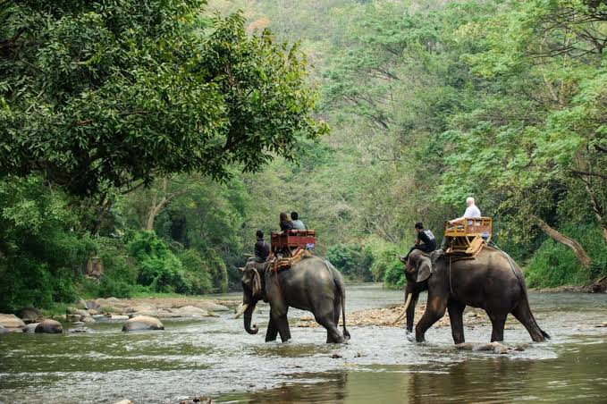
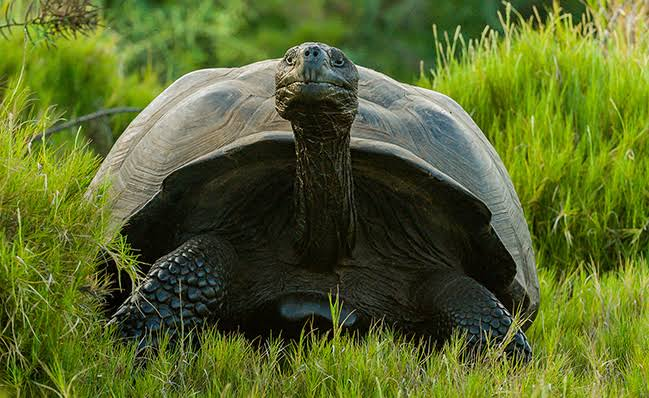

28 JANUARY 2020
The two most recent records were held by India: on July 2, 2017, 1.5 million volunteers in Madhya Pradesh planted 66.3 million and on July 11, 2016, 800,000 volunteers from Uttar Pradesh (the most populous state in India) planted 49.3 million from 80 varieties of saplings. Like India and many other countries, Ethiopia has lost significant forest cover over the past few centuries due to logging, agriculture and human encroachment.

For 50 years, WWF has been protecting the future of nature. The world's leading conservation organization, WWF works in 100 countries and is supported by 1.2 million members in the United States and close to 5 million globally.
Ethiopia’s tree-planting campaign is a fight against habitat loss, soil erosion and climate change, the effects of which have already been felt in the region, as flooding and droughts grow more severe year by year. Trees absorb carbon dioxide, and it is hoped ambitious restoration efforts will help mitigate global warming, combat desertification and ensure a more stable climate.

Other mass tree-planting campaigns have occurred around the world. Australia has a target to plant 1 billion trees by 2030. The effort has been spearhead by Australian Prime Minister Scott Morrison and Tasmanian Senator Richard Colbeck, a part of the country’s commitment to the Paris Agreement, whose aim is to “strengthen the global response to the threat of climate change by limiting the global temperature rise,” according to the United Nations. Brazil has also taken the pledge and intends to restore 29.7 million acres of woodlands by 2030. In pursuit of that goal, the Brazilian Ministry of Government and Conservation International hope to plant 73 million saplings in the Amazon rain forest by 2023. Since China announced its Grain-for-Green effort in 1999, they have converted more than 69.2 million acres of farmland into forests. Countries around the world are taking part in the Bonn Challenge, which is striving to reforest 865 million acres of degraded land by 2030. The Earth Day Network has announced it plans to plant 7.8 billion trees, one for every person, for the 50th anniversary of Earth Day on April 22, 2020.

Ethiopia’s forests have drastically declined from 35 percent of the total land cover 100 years ago to
less than 4 percent today. As Ethiopia’s landscape eroded and the prospects of this drought-prone
country grew worrying, the Prime Minister Abiy Ahmed gave a rousing call-to-action, declaring his Green
Legacy initiative, which aims to plant 4 billion indigenous saplings by October 2019. That is how the
largest one-day tree-planting effort in history came to be. Promotional videos and media were released
urging Ethiopian citizens to care for trees. The public rallied as children and civil servants were
released from school and government offices to participate on July 29, 2019.
Trees are the lungs of our planet: these life-giving forces provide us with clean air, food, fuel,
shelter, medicine and a protected water supply. Journey to one of the most enchanting forests on Earth
in search of the rare Ethiopian wolf and black-maned lions. In the Harenna Forest, walk beneath a mossy
canopy of primeval trees in the highlands of the Bale Mountains. In the Simien Mountains, giant lobelia
trees greet the wanderer, home to walia ibex and gelada baboons. Cloud forests and tree-studded
grasslands full of hidden wonders await those on safari in Wild Ethiopia: The Roof of Africa.


Top Posts
28 JANUARY 2020
A Surge in Solar Activity Predicted to Enhance Aurora Viewing

28 JANUARY 2020
Nat Geo’s Cover Story & the Ethics of Wildlife Tourism

28 JANUARY 2020